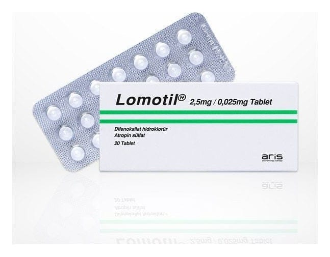

Lomotil 2,5 mg/0.025 mg Tablet, 12 Adet

Ne için kullanılır
KT · Bölüm 1LOMOTİL®, antimotilite ve antimuskarinikler grubuna dahildir.
Her bir tablet 2,5 mg difenoksilat hidroklorid ve 0,025 mg atropin sülfat içerir. LOMOTİL®beyaz, bir yüzünde “SEARLE” yazan yuvarlak, bikonveks tablet şeklindedir ve 20 tablet halinde temin edilebilir. LOMOTİL®aşağıdaki durumların tedavisinde kullanılır: • Ani başlayan (akut) ishal tedavisinde sıvı kaybının önlenmesi amacıyla yardımcı tedavi olarak, • Geçici veya kalıcı bir süre için barsak içeriğinin karın duvarından boşalmasını sağlamak için ameliyat ile karın duvarında bir delik açılarak ince/kalın bağırsağın bir kısmının bu delikten çıkarılması ve deliğin üzerine torba takılması işlemi (ileostomi/kolostomi) sonrası dışkı oluşumu kontrolünde,
• Uzun süreli iltihabi bağırsak hastalığının (ülseratif kolit) uzun süreli ve hafif belirtilerinin giderilmesinde kullanılır.